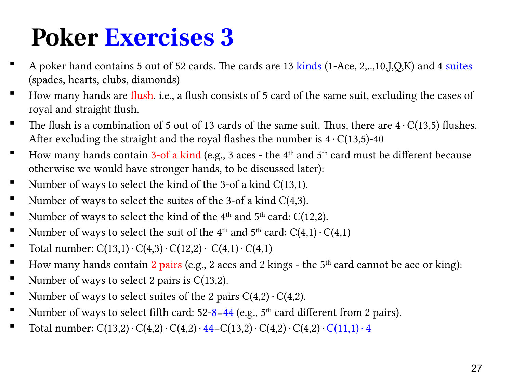

L1.6 · 第 27 页讲解原文
查看这一页课件

普通同花、三条与两对
本页的牌型采用互斥分类，较强牌型要从相应条件中排除。
普通同花（flush）：先选四种花色之一，再从该花色的 13 张牌中选五张，共 4C(13,5)。排除上一页的 40 手同花顺（含皇家同花顺），得到
4C(13,5)−40=5108.
恰好三条（3-of-a-kind）：三张同点数，另外两张点数互不相同，也不同于三条点数。先选三条点数 C(13,1)，再从四花色中选三种 C(4,3)；剩余 12 种点数中选两种 C(12,2)，每种选一张花色。因此
C(13,1)C(4,3)C(12,2)⋅42=54912.
剩下两张若同点数会成为葫芦；若再选三条的点数会成为四条，因此都不允许。
恰好两对（two pairs）：先从 13 种点数选两个作对子，C(13,2)；每个对子各选两花色，C(4,2)2。第五张不能使用两个对子点数，所以有 11⋅4=44 种：
C(13,2)C(4,2)2⋅44=123552.
两个对子地位相同，选点数用组合；不要再乘 2!。点数与花色逐步确定整手牌后，也不排列五张牌。